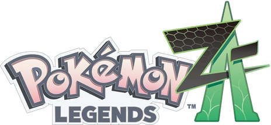

Pokemon Legends: Z-A

| Release Date: | October 16th, 2025 |
| Genre: | RPG |
| Developer: | Game Freak |
| Platform: | Nintendo Switch, Nintendo Switch 2 |
| Details: | Website |
This is a new entry to the Pokemon Legends series, which is kind of a tangential series to the mainline Pokemon games. You're still going around catching Pokemon, battling them, and progressing some sort of story, but the shakes up those core aspects that has defined the Pokemon series throughout its existence. This game takes place entirely within Lumiose City, which is the "Paris" of the Pokemon World. You're a tourist coming to the big city and get caught up in the Z-A Royale, fighting your way to the top to become Lumiose's top "Mega Evolution Trainer". I like how these Legends games shake up the mechanics, as it refreshes the Pokemon formula. They introduces a fun feedback loop to keep you engaged with the game's mechanics, but there's enough "paper cuts" here to keep the game grounded with the rest of the series.
Gameplay
The big change they introduce in this game is the battle system. Instead of all the battles being turn-based and methodical, they now happen in real-time, in a space where your Pokemon can move around the battlefield. It changes the battles completely, as you're now considering your attack cooldowns, your Pokemon's position, the range of your attacks, and I think these are all positives! It feels more akin to how I've imagined Pokemon battles to play out, a scrap between monsters rather than standing there staring at each other. I really liked how cooldowns played into combat, for it gave me incentive to utilize status moves while my main attacks are on cooldown.
That doesn't mean it was perfect though. As the game progressed, the amount of strategy I was putting into my fights diminished, as it became apparent I could win most fights by just pelting their Pokemon with four attacks. It became even more clear when your cooldowns still processed through "cutscenes", so by the time they've sent out their next Pokemon, I could smack them again with the same move. While positioning mattered, it felt clunky because I didn't have direct control over my Pokemon. I'd direct them to use Ice Beam, which they'll just across the whole battlefield to unleash it next to me, only to hit a lamppost between itself and the opponent... It was a lot of fun at first, but almost felt like it regressed behind the old turn-based system in terms of complexity by the end of it.
The gameplay loop I eluded to above is tied to the day-night cycle. During the day, you're encouraged to explore the city for Pokemon to add to your team, complete quests to obtain useful items, and progress the main story. When it switches over to night, a Battle Zone spawns in a random location in the city, where you attempt to battle as many trainers as possible, while also completing various challenges within the battles to obtain coins. This is the main method of training your Pokemon, and obtaining large amounts of money to purchase items and clothing. The cycle is fun, because it gives you time to enjoy to two sides of a Pokemon game, catching new Pokemon and battling trainers. Doing one influences the other, by throwing new Pokemon on your team to train during the night, then using the money earned for more Pokeballs and enter stronger Wild Zones to catch stronger Pokemon. It did become a bit repetitive, as the pool of trainers to fight isn't that large for how often your participating in the zone, but was fun nevertheless.
Story/Worldbuilding
It was an interesting choice of theirs to have the whole game take place within Lumiose, and I don't think they really sold me on it. The city didn't feel small, as there are different environments within the city (skyscrapers, waterways, parks, etc.), but it did feel repetitive. You could be in two completely different areas of the city, but they'd look identical because it's just buildings with a hint of greenery. I didn't notice it as much till it was pointed out to me, but it felt oddly quiet for what's supposed to be a metropolis. People are just standing all the over the place, very few actually moving around. Some streets are just completely empty, which I'm not expecting them all to have unique interactions, but to be void of anything besides the buildings is just, odd. For limiting the game to such a small space, I would expect a greater attention to detail to make the city feel alive, but it just felt kind of, meh.
The story itself was alright. I think they've improved the personalities of the main characters over previous games, as they felt engaging and human, with flaws and thoughts outside of their main characteristic. As you progressed to the later ranks of the Z-A Royale, I liked how each rank turned into a bit of a mini-story about the trainer we were tasked on fighting, giving us a glimpse into their life and the role they play within Lumiose City. It gets a little... weird by the end, the main climax feels like it was kind of shoehorned into making sense with X/Y's story, but they actually had emotional moments! Which were then ruined by the silence coming from their mouth. This story would've been so much more immersive if it included voice acting, but whenever someone talked and moved their mouth, and nothing came out, it broke immersion a ton for me. I don't mind games not having full voice acting, but there just needs to be SOMETHING coming from their mouth, as it's just weird to see the movement, read the text, but missing the sound.
The side quests throughout the game are a bit hit or miss. There are a couple really cool ones early one, like when you help out a hairstylist see all the colors of Flabébé to spark her inspiration, granting you access to new hair colors. Like that's cool! Your actions helped someone, who used their skills to unlock new things for you! It's then sad to go to the next quest, which is just "My strategy is unbeatable! Fight me and find out kid!", you beat them easily, in which they then give you the TM that formed their strategy. I get it's a nice way to introduce new moves to the player and how they interact with this new battle system, but after the 10th TM received this way I get it by now.
Visuals, Audio, and Performance
I don't really have much to say on the visuals or audio of this game. It looks fairly similar to Scarlet and Violet in terms of texture quality, but is not as "muddy" since the environment is confined to a smaller place, so not as much anti-aliasing needed. I can't remember much of the music, and it became quite repetitive. The Lumiose City theme does play different instruments in the different districts, but it's still the same underlining song. Between that, the main battle theme, and the clothing store song, it didn't feel like much variety.
I do need to applaud them on the performance of the game. Going into the game, I was expecting the game to run as poorly as Violet's DLC ran on my switch. Valerie setup a hold drinking game for when I complained about it! She was sad the drinking game was ruined, but it was such a relief to not be playing a slideshow of a game. I don't think I ran into any performance problems, besides the lengthy loading screens I mentioned above.
Overall Thoughts
When I finished the main story, and began thinking about this write-up, I overall was feeling pretty positive about the whole thing! The novelty of the new battle system was fun to experiment with, the story was overall enjoyable (besides the no voice acting, still upset about that), and getting to experience seeing these new megas was fun! Then I began writing, and was surprised by how negative I was. I don't think I'm wrong in feeling that way, there is problems with the game, just didn't expect to be this negative given my initial feelings.
After pondering that for a bit, I think I've figured out the best way to describe it. I would say, my experience with this game was like getting a burger at a sit-down restaurant chain. It's not like a gourmet burger you could get at a fancier restaurant, they might have forgotten to add pickles to it, but it still tastes good! On its own, the game is a fun experience if you've enjoyed Pokemon games in the past. It hits a lot of the same marks, but it still has a lot of problems that Pokemon games tend to have, and other games tend to always address. I do prefer more interesting, immersive experiences from my games, but it's still fun to enjoy a familiar formula.